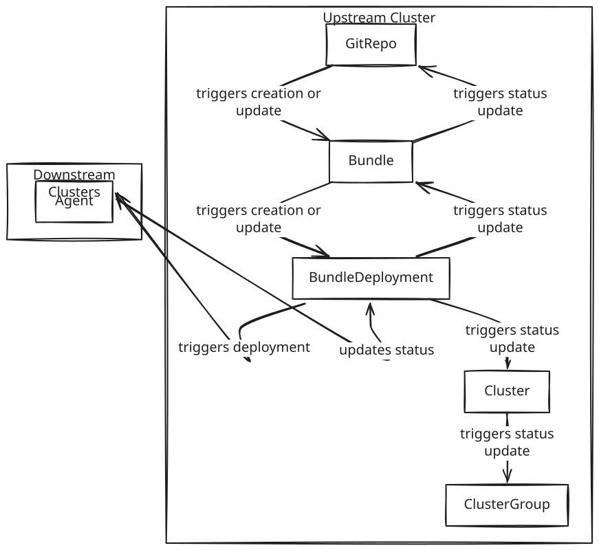

状态字段
显示状态
GitRepos、HelmOps、Clusters 和 Bundles 在应用 Bundles 的每个阶段都有不同的状态。
由于 BundleDeployments 的状态会传播到 Bundle、GitRepo、Cluster 和 ClusterGroup，因此您会发现它们以相同的方式显示。区别在于对资源的视角。
查看 GitRepo 时，所有与该 GitRepo 相关的资源状态都会在此显示。查看 Cluster 时，该 Cluster 中所有 Bundles 的状态会显示，可能跨越多个 GitRepos。查看 Bundle 时，该 Bundle 中所有 BundleDeployments 的状态会显示。
Ready 条件用于确定 BundleDeployments 是否处于 Ready 状态。
如果所有 BundleDeployments 都处于 Ready 状态，则 Ready 条件设置为 True。
如果至少有一个 BundleDeployment 不在 Ready 状态，则 Ready 条件设置为 False。
所有 BundleDeployment 状态汇总到 Ready 状态条件的 message 字段中。为了防止消息过长，仅显示前十个状态。message 字段包含每个状态下的 BundleDeployments 数量，后面跟着 BundleDeployment 所在的 Cluster 名称。Ready 状态被排除在 message 字段之外。
例如：
status:
conditions:
- lastUpdateTime: "2025-06-25T14:59:35Z"
message: WaitApplied(1) [Cluster fleet-default/downstream4]
status: "False"
type: ReadySUSE® Rancher Prime Continuous Delivery 使用 sigs.k8s.io/cli-utils 模块的 kstatus 软件包来根据资源的状态确定 BundleDeployments 的就绪状态。
有关详细信息，请参见 kstatus 软件包的 README。

status.display 字段提供状态的摘要。状态按照等级排列，最差的状态被用作 state，显示在 status.display 字段中。
这是状态显示的排名。如果一个 Bundle 有不同状态的 BundleDeployment，最差的状态将用于 status.display.state 字段。
该状态也会从 Bundle 传播到其他 SUSE® Rancher Prime Continuous Delivery 资源（GitRepos、Cluster、ClusterGroup）。
从最好到最差：
-
就绪
-
NotReady
-
待发
-
OutOfSync
-
修改时间
-
WaitApplied
-
错误应用 :
分发包
-
就绪 :包已被部署，所有资源都已就绪。如果没有，
Ready条件的message字段包含 BundleDeployment 状态的汇总。 -
未就绪 :捆绑部署已被部署，但某些资源尚未就绪（例如，容器镜像正在拉取或服务尚未报告就绪）。
-
待处理 :包正在等待由 Fleet 控制器处理。 如果暂停了发布，这可能会发生（请参阅 发布策略）。
-
不同步 :从 Fleet 控制器同步了 Bundle，但尚未创建更新的 BundleDeployment，因此下游代理无法同步更改。 如果暂停了发布，也可能会发生这种情况（请参阅 发布策略）。
-
已修改 :包已部署，资源已准备好，但某些已部署的资源是外部修改的，而不是来自Git。
-
等待应用 :包已同步，但等待部署。持续显示此状态可能表示目标集群无法访问。
-
错误应用 :包成功同步，但在部署过程中遇到错误。
群集
-
WaitCheckIn :等待代理报告注册信息和集群状态。
-
就绪 :此集群中的所有包已部署，资源已准备好。
-
未就绪 :此集群中的某些包尚未准备好。
-
待处理 :某些包待处理。
-
不同步 :某些包不同步。
-
已修改 :某些包已被修改。
-
等待应用 :某些包等待应用。
-
错误应用 :某些包存在错误。
GitRepo
-
就绪 :
True如果所需和当前状态匹配。如果False，消息包含：-
来自 GitJob 控制器的错误，
-
来自 Bundle 的错误（例如，模板失败），或
-
不在
Ready中的 Bundle 的汇总列表。
-
-
GitPolling :指示轮询或初始克隆是否正在进行。
True如果轮询成功或被禁用。 -
调和中 :控制器当前正在调和更改。
-
停滞 :控制器遇到错误或未能取得进展。
-
已接受 :已应用 GitRepo 限制，并且存在外部 Helm 秘密。
HelmOp 条件
-
就绪 :
True如果所有 BundleDeployments 成功部署；False如果有任何未就绪。 -
已接受 :
False如果 Helm 选项无效，图表版本无法解析，轮询失败，或 Bundle 创建失败。 -
轮询 :
True如果轮询成功。False否则，带有错误消息。
status.display
status.display 字段在 GitRepos 和 GitOps 之间共享。这两个资源包含一个 status.display 字段，概述资源的状态。state 的值可能因资源类型而异。
-
readyBundleDeployments:以%d/%d形式显示已准备与总捆绑部署数量的字符串。 -
state:表示 GitRepo 的状态（例如，GitUpdating）或根据 状态排名 的最高 BundleState。如果Ready，则设置为空值。 -
message:包含相关的部署条件消息。 -
如果存在错误消息，则为
error:true。
资源列表
部署到目标集群的资源被分类为 GitRepos 和 HelmOps。
GitRepos 的 status.ResourceCounts 列表源自 bundleDeployments。
perClusterResourceCounts 字段提供有关已部署资源的每个集群统计信息。
perClusterResourceCounts:
fleet-default/imported-0:
desiredReady: 9
missing: 0
modified: 0
notReady: 0
orphaned: 0
ready: 9
unknown: 0
waitApplied: 0
fleet-default/imported-1:
desiredReady: 9
missing: 0
modified: 0
notReady: 0
orphaned: 0
ready: 9
unknown: 0
waitApplied: 0
fleet-default/imported-2:
desiredReady: 9
missing: 0
modified: 0
notReady: 0
orphaned: 0
ready: 9
unknown: 0
waitApplied: 0
readyClusters: 3
resourceCounts:
desiredReady: 27
missing: 0
modified: 0
notReady: 0
orphaned: 0
ready: 27
unknown: 0
waitApplied: 0这有助于一目了然地识别哪些集群存在不完整或不一致的部署。
BundleDeployment 资源包括两个额外字段以便于查看：
-
incompleteState：如果未就绪或已修改的资源状态项数超过 10，则设置为 true。 -
resourceCounts：按状态计算资源数量。
HelmOps 的 status.ResourceCounts 列表源自 bundleDeployments。